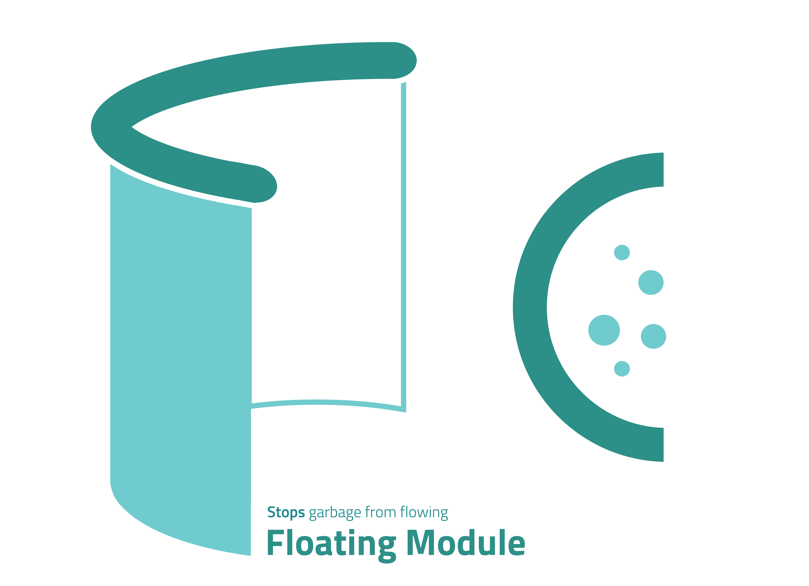
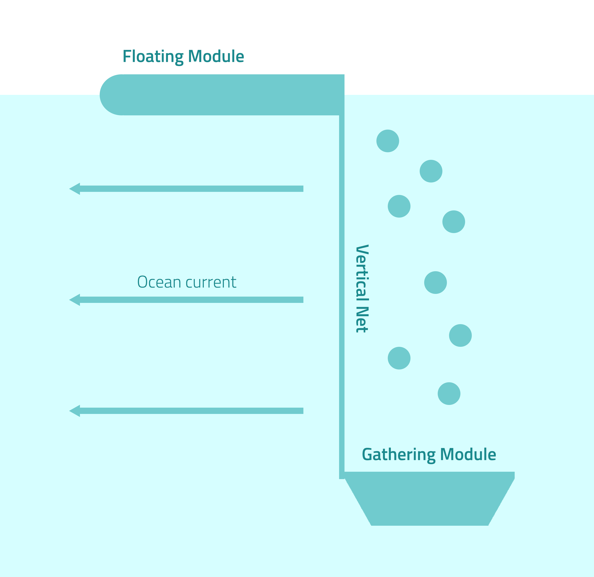

Over 10 times the size of Florida covers the Pacific with TRASH
Trash in the ocean follow movements of ocean currents, ocean winds to accumulate in certain
areas of the ocean. Annually, large amounts of trash are being additionally thrown into the ocean.
If these trash are left alone to travel the world, they will damage Earth’s environment, and therefore a
solution is being required to clean Earth’s oceans.
What's Oceanus?
Environment - Friendly
Using recycled plastic, considering marine lives and generating electricity with solar panels,
our machine thinks enviornment prior to any other considerations.
Automatic System
Sailing with advantage of ocean currents and ocean winds and spread net where ocean currents converges, our machine automatically collects and delivers litters .
Stability
Using aluminuim for mesh, our machine would be light and stable, but still effective. Recycling plastic, we can utilize the quantity and efficiency of our machines.
Our System
Outline
Oceanus is a project to remove the garbage from the sea.
After sending the devices to the garbage-populated area which is obtained from the data analysis,
the devices retrieve the trash and transport them to the land, potentially recycling it.
Mechanism of Our System
Once the system is established at the spot we’ve found from the data, the ocean waste will be caught by the mesh. Fish will never be caught into it, because an electric pulse will be always generated by the energy from the solar-energy generator.
When the trash accumulates(appropriate load: 400 ton), the elevating lift operates(by solar energy), the gathering machine comes up to the top of the mesh and sweeps the trash from the mesh while ascending.
After that, the trash returns to the land where it belongs to. We designed the body of the gathering module in a spiral form so that the process of collecting wastes or transporting may happen more effectively.
The waste are mostly used for other economic activities, and the rest of the plastic waste are reproduced for new systems(transporting machines, gathering modules).
Features
One of the potential risks of laying the skirt of nets and collect floating garbage is that lots of fish could be caught.
Because we are arranging the system in the region where lots of marine life live in, we had to be contemplated in displacing our system without harming those natural life.
As a solution, we have come up with the fish repelling device via electric pulse. First developed by Smith-Root, a fish repelling system called Fish Guidance and Deterrence Barriers contains BP-1.5 Programmable Output Waveform pulsars.
The pulsars are connected to a group of electrodes submerged in the waterway. Pulsars store energy inside them and discharges it.
Since pulse width and repetition are adjustable to create the waveform required to halt the movement of fish, it makes fish to avoid the waterway without harming the fish.
Based on this model, we attach the pulsars at the top of the aluminum mesh so that the mesh can widely spreads out the pulse to nearby area, leading fish to avoid the mesh.
Considering the wide size of mesh, various pulsars are needed. However, since aluminum has high conductivity, efficiency would be high enough.
Sufficient amount of energy can be provided from solar panel which is placed upon the floating module.

The Ocean Cleanup Project has measured the vertical distribution of plastic oceanic garbage during their 6 expeditions from 2013 to 2015.
According to their results, buoyant plastic garbages such as PET bottle are distributed within the top 5 meters of the ocean.
We referred to this data, and set the depth of our aluminium mesh and the location of gathering module to be 5 meters below the surface.
Floating module and the aluminium mesh attached to it has a wire for the gathering model to arise.
It uses electricity created from solar panels on the top of the floating module to operate.
We set the top radius into 10m, and the bottom radius into 9m. This is because the gathering module needs to gather as many wastes as possible, and also it has to maintain its center of mass so that the whole system doesn’t just cave over.
By using the density of the material of gathering module(UHMW-PE), we calculated the total mass of it. It is about 106 ton.
Once we calculated the total mass, we approximatelly calculated the appropriate load by simulating the whole system using the program “Maya 3D”. We set the standard for the maximum weight that can maintain the whole system(not just flip over).

We chose one point from various coordinates where ocean current is accumulated a lot, which has a longitude of 155 and latitude of 10 to apply drag equation to calculate the threshold force to set the floating module stationary. For the gathering module which is set below water, we have modeled the magnitude of drag force and the magnitude of countering force against drag force. According to our modeling, total countering force in need is 0.346(N). Because it is small enough to neglect compared to its total weight of 106t, gathering module does not need power module to be pushed forward. For the floating module we have modeled the condition with the method applied in the case of gathering module. Because the floating module has 223t of total weight, it is accelerated by a rate of 1.097 (m/s^2). This amount of electric power is provided by solar panels on the floating module. Since total amount of energy produced from the solar panel exceeds the threshold for the floating module to stay stationary, the whole device can maintain mechanical equilibrium, without either being swept away by ocean current/wind or being capsized.
Data Analysis
Using OSCAR 1 degree ocean surface currents data and Cross-Calibrated Multi-Platform(CCMP)
ocean surface wind data, we found out efficient ways to implement our project.
Flux Density
In order to find out where ocean currents and ocean winds accumulate,
we calculated the divergence of both vector data. Calculating the divergence of the vector field numerically,
we could figure out points where the value is high, and points where the value is low.
We assumed points which have a low divergence value as points that have a high possibility for oceanic garbage to accumulate,
since low divergence means the vectors gather at that point.
The animation shown on the left is the divergence of ocean currents plotted on the world map, based on data from 1992 to 2019, measured every 5 days.
import netCDF4
import numpy as np
import matplotlib.pyplot as plt
def divergence(f):
num_dims = len(f)
return np.ufunc.reduce(np.add, [np.gradient(f[i], axis=i) for i in range(num_dims)])
for i in range(1992, 2020):
data = netCDF4.Dataset('data\\world_oscar_vel_5d%d.nc.gz' %(i), format = 'NETCDF4')
for j in range(data.variables['time'].size):
uf = data.variables['uf'][j][0]
vf = data.variables['vf'][j][0]
Fx = np.array(uf[:][::-1])
Fy = np.array(vf[:][::-1])
F = [Fx, Fy]
g = divergence(F)
plt.figure(figsize=(9, 4))
plt.pcolormesh(g)
plt.savefig("%d_%d.png" %(i, j+1), format = 'png')
Accumulation of Ocean Current
To clean up the ocean efficiently, knowing how is not enough. Knowing where to clean is vital,
so we have to come up with a way to calculate optimal position to clean. We used the ocean current data by NASA to solve the problem.
The data contains information about speed of current in a specific position. We spliced the ocean current data to multiple chunks,
and calculated relationships between each chunks, and made a network describing the relationship.
Using in-degree centrality and out-degree centrality, the algorithm calculated which point is the source — where current diverges,
and where is the sink — where current converges. Then, using max-flow min-cut theorem, we calculated maximum flow between sources and sinks,
yielding points which block the flow between sources and sinks.
import netCDF4
import numpy as np
import matplotlib.pyplot as plt
import networkx as nx
def polar_deg(x, y):
z = x * 1j + y
return np.angle(z)
def grid_coord(x, y):
return (x - x % 5, y - y % 5)
def in_range(x, y):
return 0 <= x < 360 and 0 <= y < 140
dataset = netCDF4.Dataset('./datasets/world_oscar_vel_5d2019.nc.gz')
uf = dataset.variables['uf'][0,0].data
vf = dataset.variables['vf'][0,0].data
graph = nx.DiGraph()
for x in range(0, 360, 5):
for y in range(0, 140, 5):
graph.add_node((x, y))
deg = polar_deg(uf, vf)
deg = np.swapaxes(deg, 1, 0)
dx = [5, 5, 0, -5, -5, -5, 0, 5]
dy = [0, -5, -5, -5, 0, 5, 5, 5]
edges_dict = dict()
for x in range(0, 360):
for y in range(0, 140):
if np.isnan(deg[x,y]):
continue
for i in range(8):
if 2 * np.pi / 8 * i <= deg[x,y] < 2 * np.pi * (i + 1):
gridx, gridy = grid_coord(x, y)
nextx = gridx + dx[i]
nexty = gridy + dy[i]
if not in_range(nextx, nexty):
continue
if ((gridx, gridy), (nextx, nexty)) not in edges_dict:
edges_dict[((gridx, gridy), (nextx, nexty))] = 1
else:
edges_dict[((gridx, gridy), (nextx, nexty))] += 1
ebunch = [key + ({'capacity': val},) for key, val in edges_dict.items()]
print(ebunch)
graph.add_edges_from(ebunch)
centrality = nx.algorithms.in_degree_centrality(graph)
print(centrality)
print(max(centrality.keys()))
centrality_map = np.zeros((360, 140))
for key, val in centrality.items():
for x in range(key[0], key[0] + 5):
for y in range(key[1], key[1] + 5):
centrality_map[x][y] = val
plt.figure(figsize=(18, 8))
plt.imshow(centrality_map.swapaxes(1, 0))
plt.show()
Ocean & Air Current Path Tracker
Since we have the data of velocity of ocean currents, we can get the location of certain particle on the current, by integrating the velocity of the route. To get the route, with discrete sensor data, we first find the closest datum at certain point. If datum found, add the velocity multiplied with constant, changable since we just care about the route not the actual position. This process ends when the particle arrives at the continent or the speed of the flow is too slow.
For air currents, we applied same mechanism. After finding the particle's route according to air currents and ocean currents, we add up those two and find what route would particles follow considering the air currents and ocean currents. We assumed that the particle moves completely same direction and speed with the velocity vector.
As the result, this algorithm finds the destination of the soloar powered boat with the certain start point P by adding up the velocity.
Calculating the u, v of the velocity vector with opposite sign would give the inverse solution of the route, meaning that with given destination Q, we can simply find where should we launch our solar powered boat to reach the destination.
As solar powered boat would follow ocean currents when launched, and follow both when returning, we can use destination Q and use inverse operation with data of ocean currents, and use that destiation Q as the start point with data of all currents to guess where the solar powered boat arrives.
from netCDF4 import Dataset
import numpy as np
dset1 = Dataset('pentad_20111227_v11l35flk.nc.gz.nc4')
dset2 = Dataset('world_oscar_vel_5d2019.nc.gz.nc4')
"""Read the `uf` data to numpy array."""
uAir = dset1.variables['uwnd'][0].data * 0.00152597204
vAir = dset1.variables['vwnd'][0].data * 0.00152597204
uWater = dset2.variables['uf'][0][0].data
vWater = dset2.variables['vf'][0][0].data
uAir[uAir < -50] = np.nan
uAir[uAir > 50] = np.nan
vAir[vAir < -50] = np.nan
vAir[vAir > 50] = np.nan
lonAir = dset1.variables['lon']
latAir = dset1.variables['lat']
lonWater = dset2.variables['longitude']
latWater = dset2.variables['latitude']
import matplotlib.pyplot as plt
import random as rd
factor = 0.1 #constant
def findNext(latitude, longitude): #Latitude, Longitude
global factor, uAir, vAir, uWater, vWater, lonAir, latAir, lonWater, latWater
latAir2 = gridAir(latitude, latAir[0]) % len(latAir)
lonAir2 = gridAir(longitude, lonAir[0]) % len(lonAir)
uAir2 = uAir[latAir2][lonAir2]
vAir2 = vAir[latAir2][lonAir2]
if np.isnan(uAir2) or np.isnan(vAir2):
return False
latWater2 = len(latWater) - 1 - gridWater(latitude, latWater[0]) % len(latWater)
lonWater2 = gridWater(longitude, lonWater[0]) % len(lonWater)
uWater2 = uWater[latWater2][lonWater2]
vWater2 = vWater[latWater2][lonWater2]
if np.isnan(uWater2) or np.isnan(vWater2):
return False
finPhi = latitude + factor * (vAir2 + vWater2)
finTheta = longitude + factor * (uAir2 + uWater2)
if finTheta < lonAir[0]:
amount = lonAir[0] - finTheta
finTheta = lonAir[-1] - amount
if finTheta > lonAir[-1]:
amount = finTheta - lonAir[-1]
finTheta = lonAir[0] + amount
return (finPhi, finTheta)
def gridAir(A, org):
return 4 * int(round(4*(A % 1)) / 4 + np.floor(A) - org)
def gridWater(A, org):
return int(round(A - 0.5) + 0.5 - org)
def findStart():
global uAir, vAir, uWater, vWater, lonAir, latAir, lonWater, latWater
longitude = rd.uniform(lonAir[0], lonAir[-1])
latitude = rd.uniform(latAir[0], latAir[-1])
Theta = gridAir(latitude, latAir[0]) % len(latAir)
Phi = gridAir(longitude, lonAir[0]) % len(lonAir)
while np.isnan(uAir[Theta][Phi]):
longitude = rd.uniform(lonAir[0], lonAir[-1])
latitude = rd.uniform(latAir[0], latAir[-1])
Theta = gridAir(latitude, latAir[0]) % len(latAir)
Phi = gridAir(longitude, lonAir[0]) % len(lonAir)
return latitude, longitude
def euclidD(A, B):
return pow((A[0] - B[0])**2 + (A[1] - B[1])**2, 0.5)
plt.figure(figsize=(12.8, 9.6))
plt.quiver(lonAir[::8], latAir[::8], uAir[::8, ::8], vAir[::8, ::8], color = "#000000", scale = 3, scale_units = 'x')
plt.quiver(lonWater[::2] - 20.5, latWater[::2], np.c_[uWater[::2, -20::2], uWater[::2, 0:340:2]], np.c_[vWater[::2, -20::2], vWater[::2, 0:340:2]], color = "#0000FF", scale = 3, scale_units = 'x')
for k in range(1000):
prevposition = findStart() # lat & lon
routeX = [prevposition[1]] # lon
routeY = [prevposition[0]] # lat
print(f"Start Point : {prevposition}")
for i in range(1000) :
position = findNext(prevposition[0], prevposition[1])
if not position or euclidD(position, prevposition) <= 1e-5:
break
routeY.append(position[0]) # lat
routeX.append(position[1]) # lon
prevposition = position
plt.scatter(routeX, routeY, 0.1)
plt.show()
print("E")
Tracking Paths
This is a console window for algorithm explained in the 'Ocean & Air Current Path Tracker' section. Read the following instructions, and you can track the route of OCEANUS sailing in the ocean!
Instructions
1. Click 'run', and input latitude/longitude values, which will be the start location of the journey.
2. An image will be shown, which is the route of a boat which started sailing at that location.
3. The image will only automatically show for one time after refreshing the website.
4. Still, if you want to show the image, click on the file button on the left and click "Route.png"